Speakers and Talks
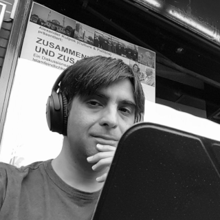
Zeeshan Ali
Open Source Geolocation: The story & challenges ahead
In this talk, Zeeshan will share his story of development of Geoclue, the open source geolocation service for Linux. He'll talk about the challenges and setbacks faced during these years in developing a framework designed to provide a simple API to application developers while also addressing the privacy issues related to giving out users' location to random applications. Also presented will be the current big problems faced by the project and possible solutions to them.
Developer, helicopter pilot and cat lover.
Zeeshan is a Senior Software Engineer at Red Hat, based in Berlin. He is a veteran GNOME developer, with many years of C and Vala experience. More recently he's been in love with Rust language. He has a private pilot license for helicopters and currently learning to fly planes. He has a very loving and lovely cat.
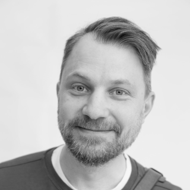
Josef Andersson
Open Source at SVT
Up until recently, the only notable Open Source project stemming from SVT was the very successful CasparCG project, a layer-based real-time compositor used to play out professional graphics, audio and video to multiple outputs. CasparCG has been developed as an Open Source project since 2006.
Now, as SVT is looking for a broader collaboration with other public broadcasters, we have recently adopted a new Open Source policy that encourages developers to be more active in the Open Source community. Both by contributing to existing projects and by releasing in-house developed projects as Open Source.
In our talk we will present how SVT came to adopt this new Open Source policy, the challenges faced in getting it accepted within the organization, and how it has played out so far. We will also talk about how SVT encourages developers to contribute to Open Source projects and release their own code as Open Source, and why working with Open Source is essential for a public service broadcaster company.
Josef is an Open Source enthusiast that has been active in many areas of the Open Source communities. As a translator, code contributor to various projects, with licenses and Open Source strategy, arranging hackathons and as a writer for tech magazines. Currently, Josef is working at SVT as a senior developer, and is also a member of their newly formed Open Source lead team that is working with implementing an Open Source mindset in the organization.

Mikey Ariel
Docs or it didn't happen!
If you ever skimmed through a README, tried to follow a quickstart tutorial, attempted to decipher an error message, or typed '--help' in your console, congratulations -- you have encountered documentation!
Long gone are the days of massive books with never-ending stories about your software. Today's users are smarter and less patient, which means that we no longer need to document *all the things*, as long as what we do document is clear, concise, helpful, and accessible. And that's where the real work starts.
Documentation requires some attitude adjustment, since prose doesn't neatly compile into binaries as code does. But Don't Panic(tm)! No matter what your role is, you can apply a few key principles from the technical writing world to make your project more docs-friendly, and therefore more user- and contributor-friendly.
Mikey (a.k.a. ""That Docs Lady"") spent the better part of the last 10 years documenting super-geeky enterprise software, most recently for OpenStack Platform at Red Hat. She is also on the global core team for Write the Docs, Django Girls alumni, co-author of the Happiness Packets project, and documentation coach for open-source projects.
Since joining the open-source family in 2013, Mikey has been giving talks and writing articles about docs, DevOps, and community. She regularly runs documentation workshops, hackfests, and help desks at developer conferences. Owner of the sporadic-erratic blog docsideofthemoon.com, lover of music, dance, traveling, and coffee.
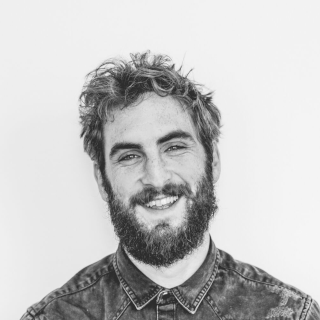
Sam Bellen
Knock knock, who's there? Authenticating your single page apps using JSON Web Tokens.
When it comes to writing code, there’s nothing we take more serious than authentication and security. Modern single page applications bring along new challenges. By using solutions like the OpenID Connect protocol and JSON Web Tokens we can improve the user experience when authenticating with your apps, providing a seamless authentication process.
In this talk I will try to explain in depth, the way JSON Web Tokens work and can be used to secure your single page apps. I will explain the difference between using opaque tokens and JWTs. The talks will also give an overview of a modern authentication flow and a step by step breakdown of how it works exactly. No specific previous knowledge is required, but it helps the audience has some experience with authenticating users.
I'm Google Developer Expert who works as a Developer Evangelist at Auth0. At Auth0 we're trying to make authentication and identification as easy as possible, while still keeping it secure.
After office hours I like to play around with the web-audio API, and other "exotic" browser API's. One of my side projects is a library to add audio effects to an audio input using JavaScript.
When I'm not behind a computer, you can me find playing the guitar, having a beer at a concert, or trying to snap the next perfect picture.
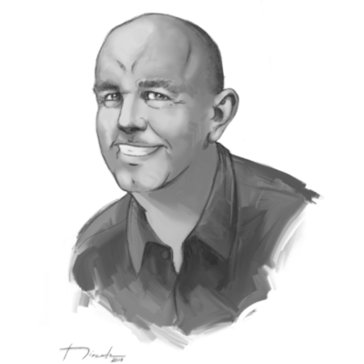
Agustín Benito
Embracing FLOSS as a shortcut towards agility
Many organizations are going nowadays through transformation processes at scale toward agility. Agustin will explain why embracing Open Source is a great way to increase the chances any organization has to succeed in such complex processes, which key challenges would be easier to face and why.
The talk targets those developers and managers interested in Open Source and Agile/DevOps at scale.
Agustín is currently Principal Consultant at Codethink Ltd. He has 20+ years of experience in different management and executive roles, 15+ of them in the software industry, specially in distributed, Open Source software organizations. This experience allows him nowadays to help automotive and embedded companies to improve processes and practices associated to design, develop, but specially to deliver and maintain software products, systems, technologies and tools. Agustín has been contributing to a variety of FLOSS community projects, like KDE. Further information about him is available at http://www.toscalix.com.
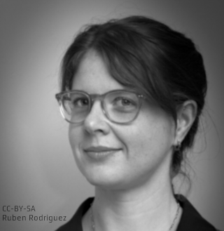
Molly de Blanc
Insecure connections: Love and mental health in our digital lives
The lens through which we view--and know--what it means to love, to be ourselves, and to connect with others is now backed by microchips and millions of lines of code. As our lives continue to become increasingly managed by our devices, we need to ask ourselves what we're gaining--and what we're giving up--by allowing technology into the spaces that make our hearts ache and that keep us up at night.
This talk will weave together two narratives essential to many people: health and love. It will examine the ways in which both of these topics have become entwined with computing, what that means for us as individuals, and what that means for our individual and societal user freedoms.
Molly de Blanc is a free software activist. She works at the Free Software Foundation as the campaigns manager, organizing and educating around free software issues. She serves as a director on the Open Source Initiative board of directors and is a contributor to the Debian project.

Mirko Boehm
Open Source, Standards Development and Patents in Europe
The standards community develops specifications. The FOSS community implements standards. The FOSS community also develops industry standards. How does this the interaction function? And is it working well? How do policy makers interact with the FOSS community to set safety standards and other requirements? What is the relationship between standards-essential patents and FOSS? What comes first, specification or implementation? Where does innovation happen, and what is the platform to develop consensus on technical standards in a market segment? Based on research work at TU Berlin and for the Joint Research Center of the European Commission and the work of the Open Invention Network to protect key FOSS projects from patent litigation, the presentation will discuss the current state of the debate at the European and international level, and provide an outlook on how the roles and functions of standards-development organisations and the wider FOSS community are converging. No live demos, unfortunately.
Free and Open Source Software contributor. Founder, Endocode. Director, Linux System Definition, Open Invention Network. KDE contributor since 1997 (including several years on the KDE e.V. board). Visiting lecturer and researcher at the Technical University of Berlin. FSFE Team Germany. Qt-certified specialist and trainer. Openforum Academy fellow. Berlin, Germany.
Carol Chen
Manage a community like conducting an orchestra - with a lot of hand waving
Have you attended an orchestral performance and wondered what it is exactly that conductors do besides waving their arms in the air? Most of the value that the conductor (community manager) brings to the orchestra (community) is carried out before the performance (behind the scenes). In this session, I will share my experiences in orchestras and open source communities big and small across different countries. How do you take care of the different types of contributors/players and bring out their best? What happens when they have differences in opinion on how to collaborate? How do you make the community welcoming and inclusive especially for people with different backgrounds and who may not speak your (programming) language? Join me on a musical journey through some of the common (and perhaps not so common) dissonances of community orchestration and their possible resolutions!
Carol Chen is a Community Architect at Red Hat, supporting several upstream communities such as Ansible and ManageIQ. She has been actively involved in open source communities while working for Jolla and Nokia previously. In addition, she also has experiences in software development/integration in her 12 years in the mobile industry. On a personal note, Carol plays the Timpani in an orchestra in Tampere, Finland, where she now calls home.
Kalyan Dikshit
Common Voice - Building Multilingual Voice Datasets
Voice recognition technology is revolutionising the way we interact with machines, but the currently available systems are expensive and proprietary. Common Voice is a massive global database of donated voices that lets anyone quickly and easily train voice-enabled apps in potentially every language. And offer developers and technologists multilingual datasets to train machine-learning models which enable them to build a wave of innovative products and services.
Kalyan Dikshit is a Mozilla Tech Speaker, Representative, and part of its Hyderabad Community, India. He spoke at the Internet Freedom Festival 2017, 2018, Still Hacking Anyway (SHA), All Systems Go! 2017, Shift DEV 2018. He recently gave a talk at “Full Stack Fest 2018” happened in Barcelona. As a volunteer he localizes software for Mozilla, Tor, Orfox, Orbot, GlobaLeaks, Signal and OONIProbe. He currently also devotes his time with ICRISAT where he works, with drones to develop and trial techniques, to connect farmers. Founder of the “JAVA 1.X Hyderabad Chapter” & Co-founder of “Duck Duck Go Hyderabad Chapter”. «Developer by Day, Hacker by Night»
Adam Dunkels
Saving the Day by Stack Smashing a Hundred Streetlights before Sunrise
Hours before an important customer demo, one hundred streetlights are running a pre-release software version with a critical bug that prevents them from working properly. What's worse, the bug also causes the remote-update mechanism to fail. Fortunately, a recent update had introduced an off-by-one bug that allowed us to create a stack smash attack that could inject a patch into each light and fix the lamps just in time before sunrise.
Adam Dunkels is the CEO and co-founder Thingsquare and an award-winning Internet of Things pioneer, named a top 35 innovator in the world by the MIT Technology Review for having created the minimal wireless networking protocols that allow almost any device to communicate over the Internet. Most of today's Internet of Things products are powered by software he created.
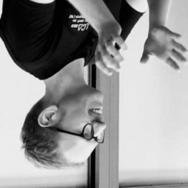
Kristoffer Grönlund
Let's Lisp like it's 1959
One of my favorite papers in computer science is the original LISP paper by John McCarthy. Written in 1959, it describes something mind-bending: The interpreter for a language in the language that it interprets. If you understand this paper, you understand how computation works.
A few years ago, I decided to implement the interpreter described in the paper, and this project turned out to be surprisingly popular. In this presentation, I'll show how to implement the original LISP interpreter in C, and together we will marvel at its elegance.
Kristoffer lärde sig programmera på en Commodore 64 med drömmar om att en dag bli spelutvecklare. Efter att ha levt drömmen på Massive i Malmö i ett antal år växte intresset för fri mjukvara, och numera jobbar han på SUSE där han hackar på diverse projekt relaterade till High Availability.
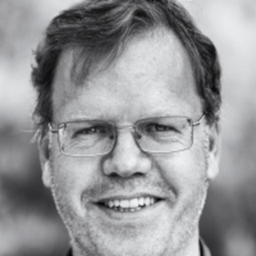
Adriaan de Groot
Calamares - the Linux System Installer
As long as Linux isn't pre-installed on your hardware, you need to install it yourself. The big five Linux distro's have their own tools, but for the hundreds of boutique distro's with specialised purposes, those tools are not (necessarily) suitable. Calamares is a Linux System Installer that is built to be customisable and tailorable for boutique distro's. It encourages shared development and cooperation for derivatives, spins, mixes and niche players.
In this short talk we'll look at the why and the what of Calamares (and probably also some "yeah, this needs work" items as well).
Adriaan is a Canadian by birth and Dutch by training, but has lived in the world of Open Source for a long time. He wears KDE and FreeBSD hats around the community, and works professionally as a C++ programmer and consultant. He is the maintainer of Calamares, a Linux System Installer.
Armin Hafizovic
Open Source at SVT
Up until recently, the only notable Open Source project stemming from SVT was the very successful CasparCG project, a layer-based real-time compositor used to play out professional graphics, audio and video to multiple outputs. CasparCG has been developed as an Open Source project since 2006.
Now, as SVT is looking for a broader collaboration with other public broadcasters, we have recently adopted a new Open Source policy that encourages developers to be more active in the Open Source community. Both by contributing to existing projects and by releasing in-house developed projects as Open Source.
In our talk we will present how SVT came to adopt this new Open Source policy, the challenges faced in getting it accepted within the organization, and how it has played out so far. We will also talk about how SVT encourages developers to contribute to Open Source projects and release their own code as Open Source, and why working with Open Source is essential for a public service broadcaster company.
Software engineer, Open Source enthusiast and proud dad. Currently working at SVT (his second home) as a Product Owner responsible internally for CasparCG as platform and additional solutions. Community manager for the amazing Open Source project CasparCG. Striving always to release existing or new products as Open Source and he has no plans to change his mindset in that question.
Magnus Hagander
PostgreSQL gotchas for app developers
Some things when it comes to working with databases are obvious to everybody. Other things are hidden from everybody. Yet some can be obvious to an experienced DBA, but come as a big surprise to application developers, and these can often be different between different databases.
In this talk I'll go through some of the common mistakes I've seen in applications built against PostgreSQL that made perfect sense, yet were suboptimal or failed.
Magnus Hagander is a member of the PostgreSQL Core Team and a developer and code committer in the PostgreSQL Global Development Group.
Magnus is one of the original developers of the Windows port of PostgreSQL. These days, he mostly works on other parts of the PostgreSQL backend, recently with a focus on security features, monitoring and backup/replication interfaces and tools.
He is also one of the core members of the postgresql.org infrastructure team, maintaining the servers that power the project, and one of the maintainers of the postgresql.org website. He also contributes to pgAdmin and other related projects.
He's been a PostgreSQL user since version 6 (with some non-serious use of Postgres 95 before that), and currently serves on the Core Team and as President of the Board for PostgreSQL Europe.
To pay the bills, he is a PostgreSQL and open source software consultant at Redpill Linpro in Stockholm, Sweden, where he works on consulting, support and training services, as well as custom development work.
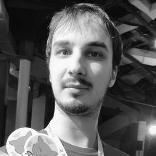
David Halasz
Component-based Design System and Development
How do you bring order to this chaotic web frontend climate fueled by the ever-changing technologies driving it? We - a UX Designer and a Software Engineer - will introduce you to the concept of WebComponents, and how we can achieve order through evolving from Bootstrap to CSS grid based design system.
Target Audience: designers and engineers. our talk introduces the importance of collaboration and bringing designers and engineers together.
The Red Hat portfolio includes about 50 different products. There was a need for a design system as different patterns were build over and over again which led to inconsistency. The UXD goal is to bring consistent user experience to the entire Red Hat portfolio. This talk explains why it is important to have a unified look and feel. Patternfly is an open-source design system that helps our designers and engineers build user friendly products. As the frontend technologies are constantly evolving, this design system has to evolve with them. We would like to talk about the history and evolution of PatternFly - how it was created and how it tries to handle the continuous evolution of the frontend landscape. Perspectives from both design and engineering will be included.
TBD
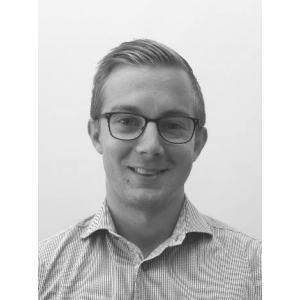
Daniel Hansson
The NextCloud VM
The Nextcloud VM is a popular way to deploy your Nextcloud for the first time. The scripts make it easy for any sysadmin to deploy in almost any environment. It's made with simplicity in mind and is therefore also very popular amongst users that aren't familiar with Linux.
This talk will explain a little bit about the history behind the VM and how it's developed over time.
I've been active in the Nextcloud community since the beginning and is the main developer of the Nextcloud VM. I founded both Tech and Me, and T&M Hansson IT AB.
You can find out more about the NextCloud VM here: https://hanssonit.se/nextcloud-vm, and here: https://github.com/nextcloud/vm.

Alexander Hultnér
Test faster, fix more
Did you ever miss that corner case bug? Maybe it was a negative integer, strange timezone conversion behaviour, off by one error or something entirely else. These subtle bugs are often hard to catch and are easily missed in test cases. You like me have probably ran into plenty of code utilising only happy path testing, only to later discover subtle bugs which are easily fixed once pointed out.
This is where property based testing comes into the picture. In this talk I will focus on a wonderful Python library called Hypothesis but the concepts apply to other languages as well. Hypethesis is based on the same concept as the famous QuickCheck library for Haskell, which in turn have been ported a large number of languages. Hypothesis uses a wide range of input to find edge cases that you could otherwise easily miss, once it finds these cases it narrows down the input to the minimal breaking example to provide failures which are easier to understand.
Alex is technologist by hearth and have been working in the industry for the past 10 years and were contributing to open source prior to that. He’s worked in a wide range of industries including but not limited to Industrial IoT, smart greenhouses, public procurement systems, facility management systems, quality systems, communication systems and more.
He’s on twitter as @ahultner, https://twitter.com/ahultner
Alex can also be reached via his website, https://hultner.se

Claes Jakobsson
The O in IoT should stand for Open
Cancelled due to illness!
During the past years we’ve been developing the Botani.st platform for urban farming. Since we don’t want our customers to end up with a plastic brick when we go bust one design philosophy has been to open as much as possible from protocols to hardware to software. And since we rely on so much open source in the project itself it’s not more than fair.
This talk will cover how we’ve designed the platform and some of the choices needed to balance openess, price and usability.
Claes has been hacking and talking open source the past 20 years and co-founded and runs a few user groups such as FOSS-Sthlm and Stockholm PostgreSQL User Group. He spends his day hacking on various things over at Trustly but not-so-secretly loves embedded and hardware thus starting the Botani.st project in 2014-ish to solve the mystery of dying plants.

Jan Jongboom
17,000 contributions in 32K RAM
The future of computing is tiny. Most computers are not desktop, laptops, tablets or mobile phones, but microcontrollers. Small, integrated systems with a few KB of RAM. And their presence is ever growing. Last year alone 31 billion (!) of them were shipped, up from 23 billion in 2015. And they get more capable every day. A modern embedded system has threads, can run Python or JavaScript, and use machine learning models. Why are you not developing for them yet?
In this talk you'll learn that microcontrollers are not scary, that there's no magic involved, and that working in very constrained systems is actually very fun! You'll also learn a thing or two about getting things to run for years on a battery, try that with a web app. In this talk we'll use Mbed OS, the largest open source Real-Time Operating System for microcontrollers. In 2018 over 17,000 commits were landed in the project, it has over 400 unique contributors, and is licensed under the Apache 2.0 license.
Jan Jongboom is an embedded engineer and Developer Evangelist IoT at Arm, always looking for ways to connect more devices to the internet. He has shipped devices, worked on the latest network tech, climbed upon buildings to install gateways and there's a monument in San Francisco with his name on it. Before he joined the IoT bandwagon he was a core contributor to Firefox OS, and he wrote hundreds of patches to various open source projects.

Michael Kerrisk
Understanding user namespaces
User namespaces are at the heart of many interesting technologies that allow isolation and sandboxing of applications, for example running containers without root privileges and sandboxes for web browser plug-ins. In this tutorial, we'll look in detail at user namespaces, building up a basic understanding of what a user namespace is and going on to questions such as: what does being “superuser inside a user namespace” allow you do (and what does it not allow); what is the relationship between user namespaces and other namespace types (PID, UTS, network, etc.); and what are the security implications of user namespaces? We'll also explore some simple shell commands that can be used for creating and experimenting with user namespaces in order to better understand how they work. Along the way, there will hopefully be time for a few live demos.
Michael Kerrisk is the author of the acclaimed book, “The Linux Programming Interface” (http://man7.org/tlpi/), a guide and reference for system programming on Linux and UNIX. He contributes to the Linux kernel primarily via documentation, review, and testing of new kernel-user-space interfaces. He has contributed to the Linux man-pages project (http://www.kernel.org/doc/man-pages/) since 2000, and been the project maintainer since 2004. Michael is a trainer and consultant, living in Munich, Germany.
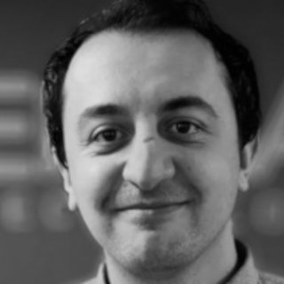
Mirza Krak
Integrate IoT cloud analytics and over-the-air (OTA) updates with Google and Mender.io
We will demonstrate how to use and integrate analytics and OTA updates into an IoT product. We will cover the integration of software update management into a Cloud IoT solution that allows you to easily and securely connect, manage, and ingest data from millions of globally dispersed devices, providing a complete solution for collecting, processing, analyzing, and visualizing IoT data in real-time.
In this talk, we will specifically use the integration between Google’s Cloud IoT Core and the Mender open source project. We’ll walk the audience through the following:
- Overview of device registration in Google IoT Core and Mender
- IoT device level OTA update services and how it is orchestrated between IoT images (Google Cloud Storage), the Mender OS Build System (Google Compute Engine), and the Mender Management Server (Google Compute Engine)
- Preauthorization of devices in the Mender Server using the same credentials as IoT Core, keeping the security model robust but simple
- Central management of your entire IoT data network from a single pane of glass
- Demo of IoT analytics application with OTA updates in Yocto Project
Mirza Krak is an embedded Linux solution specialist with seven years of experience in the field and is currently employed by Northern.tech, the commercial entity behind the Mender project.
Mirza was a Mender community member for a couple of years which led to him joining the Mender project full-time in 2018. He is involved in various other open source projects and is a Linux kernel contributor. Mirza's expertise is within Board Support Package development which ranges from hardware bringup, bootloaders, Linux kernel and build systems (Yocto/OE-core). Mirza has spoken at various conferences including Embedded Linux Conference and FOSS-North.

Chris Lamb
What can free software learn from classical music?
Programming & composition share countless traits, including being puzzle-based methods of self-expression as well as the contradictions of being artistic yet technical, collaborative yet individualistic and both can never be "perfected".
It should therefore not be too surprising that that the old world of classical music has many things in common with the free software movement of today: not only did composers of the past freely remix the works of others every subsequent performance and recording day could be considered a "derived work"...
But what can we learn today from the wild world of pre-copyright classical music? What mistakes did they make? What did classical music — as performed & composed in the past — appear to get right that we could emulate?
In this provocative and non-technical talk you will not only learn about how the lack of copyright enforcement or efficient distribution of music affected what was commissioned, composed & performed, you will also discover possible parallels to modern concepts of patents and trademarks.
In addition, we will explore how the classical world was subject to many social factors we would easily recognise today including Imposter Syndrome, issues around diversity, the role of money, patronage, hoarding and standardisation… as well as ever-present psychological factors of fame, dogma and how limitations continue to shape our world.
Currently Project Leader of the Debian GNU/Linux project and a member of Board of Directors for the Open Source Initiative, Chris is a freelance computer programmer, author of dozens of free-software projects and contributor to 100s of others.
He has been official Debian Developer since 2008 and is currently highly active in the Reproducible Builds sub-project. In his spare time he is an avid classical musician.
Chris has spoken at numerous conferences including LinuxCon China, HKOSCon, linux.conf.au, DjangoCon Europe, LibrePlanet, OSCAL, All Things Open, SCALE, Software Freedom Kosovo, #freenode Live, DebConf, FOSS'ASIA, as well as given guest lectures at New York University Tandon School of Engineering and Cambridge University.
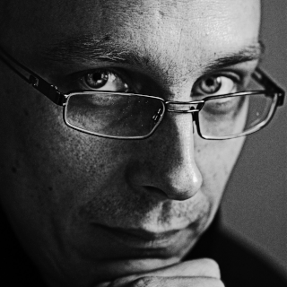
Kim Lantto
Open Data - the City of Gothenburg
In his talk Kim will discuss the state of open data in the city of Gothenburg, as well as in other cities in Sweden. He will also discuss EU projects that the city currently is involved in as well as what we want the citizens to engage in.
Kim works as development leader for digital services at the city of Gothenburg
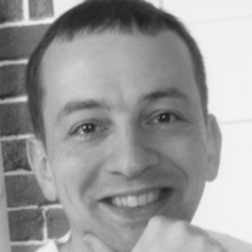
Alberto Mardegan
Using the blockchain to find the next prime number
The nature of blockchain-based algorithms make them suitable for solving almost any class of software problems, vastly expanding the field of what is achievable with network computing. At least, if you believe the Internet.
In this talk we'll take a critical approach to the blockchain (with a brief mention of cryptocurrencies), giving an overview of how they work and bringing forward some reasons why, after all, the blockchain might not be the best technology for your next project.
Alberto is a software engineer with a long development experience on Linux mobile devices. Formerly part of the Nokia Maemo team and Canonical Ubuntu phone efforts, he currently works in the automotive domain at Luxoft. His spare time is subdivided among innumerable hobbies and projects, among which a few programming ones concerning Qt, photography and the Ubports project.
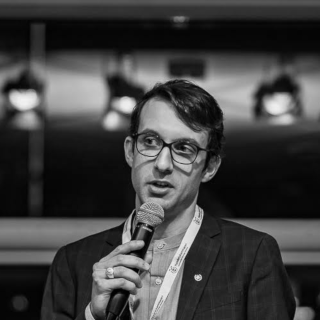
Nicolas Maxant
Open Data - Mimbly
I will talk about the potential of open data in the clean tech industry through the lens of my company, Mimbly. We are developing an add-on water-recycling system for laundry machines to make them more sustainable in terms of water, energy, and microplastics. Modern clean-tech relies on smart electronic systems to optimise our use of resources. This has the potential to generate tremendous amounts of data, and Mimbly is no exception. But what do we do with this data?
Nicolas has a background in chemical engineering and business & entrepreneurship. He currently works as the CTO of the Gothenburg-based startup Mimbly.
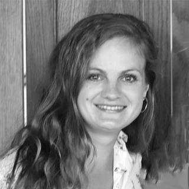
Tereza Novotna
Component-based Design System and Development
How do you bring order to this chaotic web frontend climate fueled by the ever-changing technologies driving it? We - a UX Designer and a Software Engineer - will introduce you to the concept of WebComponents, and how we can achieve order through evolving from Bootstrap to CSS grid based design system.
Target Audience: designers and engineers. our talk introduces the importance of collaboration and bringing designers and engineers together.
The Red Hat portfolio includes about 50 different products. There was a need for a design system as different patterns were build over and over again which led to inconsistency. The UXD goal is to bring consistent user experience to the entire Red Hat portfolio. This talk explains why it is important to have a unified look and feel. Patternfly is an open-source design system that helps our designers and engineers build user friendly products. As the frontend technologies are constantly evolving, this design system has to evolve with them. We would like to talk about the history and evolution of PatternFly - how it was created and how it tries to handle the continuous evolution of the frontend landscape. Perspectives from both design and engineering will be included.
Interaction Designer and Software Engineer @Red Hat

Anna Ossowski
Flourishing FLOSS: Making Your Project Successful
You maintain an Open Source project with great code? Yet your project isn’t succeeding in the ways you want? Maybe you’re struggling with funding or documentation? Or you just can’t find new contributors and you’re drowning in issues and pull requests? Open Source is made up of many components and we are often better-trained in methods for writing good code, than in methods for succeeding in the other dimensions we want our project to grow. In this talk we’ll explore the different components of an Open Source project and how they work together. After this talk you’ll be well-equipped with a ideas and strategies for growing, cultivating, and nourishing your Open Source project.
For your project to succeed, all of its non-code components must be well-maintained. What are these different components and what methods can we learn to maintain them?
- Build real relationships with your sponsors and determine ways how both sides can benefit from this relationship, don’t just ask people for money.
- Establish a good communication system with your contributors: Keep them informed, listen to their feedback and input, make them feel heard.
- Thank the people who worked on ticket triage or marketing, not just those who wrote code, in your release notes.
- Make it easy for new contributors to get started: Write and maintain good documentation, answer questions in a friendly and timely manner.
- Market and evangelize in the right places and at the right time: Give conference talks, organize sprints, keep your project’s Twitter account active, always curate new and interesting content on your blog or website.
- Implement a Code of Conduct and enforce it if needed: Make your project a safe space to contribute for everyone.
With these methods and a half-dozen others, you’ll handle beautifully all the components your project needs to succeed.
Anna loves working at the intersection of tech and people and currently works for Elastic in developer relations. She is a director of the Python Software Foundation, PyCon US staff member, Django Girls organizer, and group leader of the PyLadies Remote group. In her free time she loves speaking at conferences and mentoring future speakers. Anna is very passionate about diversity and community outreach and wants to encourage more women to learn programming because it’s awesome!
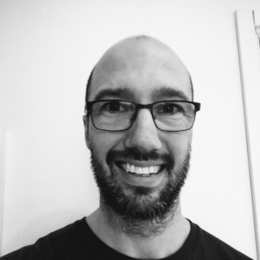
Anders Roxell
Continuously Integrating the Upstream Linux Kernel on Hardware
The aim of this project is to continuously test one of the biggest open source projects on hardware and in qemu. The project started to continuously run functional tests on TS kernels. Tests that gets run are kselftest, ltp, and libhugetlbfs. Running tests on actual hardware isn’t as easy as you may think. Failing tests, hanging tests or flaky tests are some of the issues. The project that was going to run tests on real hardware is called Linux Kernel Functional Testing (LKFT). LKFT uses infrastructure software like Jenkins, LAVA, SQUAD and bugzilla for building, testing, displaying and tracking regressions of the LTS, mainline and next kernels.
LKFT was created in early summer 2017, and the project has helped to enable LTS kernels being supported for 6 years. KernelCI is also used to build and boot testing, and today kernelCI also implements functional tests.
Anders hates running tests and therefore he loves automating them. He has been working with Linux kernels for telecommunication (e.g. base stations, media gateways) as well as various drivers and RTOS’s for automotive systems (e.g. engine-, gearbox-platforms). He has also experience from NFV/Openstack.
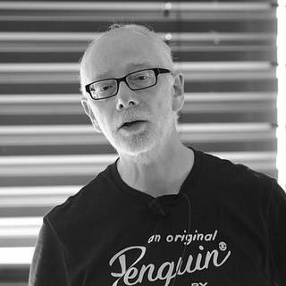
Chris Simmonds
Reducing the boot time of Linux devices
We all want our devices to boot faster, but how much effort do you want to dedicate to optimizing and maintaining a custom kernel and apps? This presentation offers a graded list of things you can do to reduce boot time. They start with simple changes, such as adjusting the position of your main application the init sequence. Then there are the changes you can make to the kernel and bootloader configuration to speed things up, and finally, there are moderately advanced techniques such as using U-Boot in falcon mode.
All of this is done using standard configuration techniques, with the idea of being able to maintain these changes in the future. I will show the effect of each of these changes on typical a embedded dev board so that you can judge for yourself where on the journey you want to jump off.
Chris Simmonds is a software consultant and trainer living in southern England. He has spent almost two decades designing and building open-source embedded systems of all shapes and sizes, and he has encapsulated much of that experience in his book, “Mastering Embedded Linux Programming”.
He is a frequent presenter at open source and embedded conferences, including the Embedded Linux Conference and Embedded World. You can see some of his work on the “Inner Penguin” blog at www.2net.co.uk

Fredrik Söderblom
Modern Email Security
In times when a major infection vector is email, it is relevant to use existing protection mechanisms (SPF, DKIM, DMARC, DNSSEC, STARTTLS etc) to protect your company and your company's customers. This presentaion by Fredrik Söderblom from StoredSafe will show how you can protect incoming and outgoing emails with relatively simple means, as well as run you through emerging techniques such as MTA-STS, TLS-RPT, ARC etc.
Fredrik has been working in the IT industry for more than 25 years, and has been involved with the Internet and security since 1992, when he designed and implemented the first firewall for Hewlett Packard in northern Europe.
Fredrik joined HP as a systems engineer at the Swedish customer response center in 1991, working mainly with compiler and kernel support. In 1995 he joined the Professional Services Organization as a senior security consultant, where he was part of forming the network security consultant group for Europe. Prior to joining HP, he worked 7 years as a programmer for Databolin, a Swedish software company.
He has designed and implemented various network perimeter security solutions in Europe and the United States, as well as performed numerous security audits.
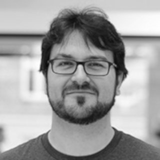
Ramón Soto Mathiesen
Limiting side-effects of applications at compile-time
By using tools where you have a clear separation between code branches that makes effects and the ones that doesn't, as for example Haskell, it's very easy to argue that this can be done in a fairly easy manner. But it's not always the case that if a specific code branch is allowed to have side-effects, these should be all possible side-effects. In this short talk, we will be showcasing how you will be able to further restrict effects, granularly and even recursively, in order to limit these side-effects. An example could be an application that only needs to access data from a specific website, limited to a relative URL, and then print it to the console. These effects restrictions will be designed into the application, which will allow you to outsource development to anyone with the right skill-set, even if they have bad intentions, knowing that they will live up to 100% the design or the application will not build.
Ramón Soto Mathiesen, is a passionate computer scientist, with talent for business, who advocates for: correctness, code quality and high standards, but always with the customer in focus.
He currently works at SPISE MISU ApS, a company founded by him, which is dedicated mainly to solve the problems arising from the application of the General Data Protection Regulation (GDPR) with a scientific approach (Computer Science and Mathematics).
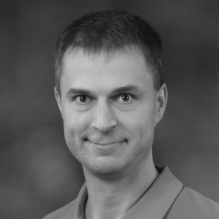
Daniel Stenberg
Writing safe and secure code
With experiences from the curl project, Daniel talks about how to write safe and secure code to run in every portable device on the planet.
Daniel is the lead developer of curl since over twenty years. One of the most widely used software components in the world.
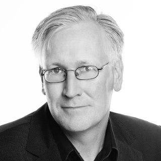
Joachim Strömbergson
Cryptech - Open Hardware Security Modules for a safer, open world
The CrypTech Hardware Security Module (HSM) Project is an international project developing an open-source hardware cryptographic engine design that meets the needs of high assurance Internet infrastructure systems. Until today, HSMs used for CA certificate signing, DNSSEC and Tor, for example, were highly expensive, proprietary tamper protected black boxes. CrypTech is changing that, making HSMs open and available to everyone.
The goal of the CrypTech project is to create an open-source hardware cryptographic engine that can be built by anyone from public hardware specifications and open-source firmware and operated without fees of any kind. In the talk we will describe what the Cryptech Alpha HSM is, the status for the project, some of the experiences we’ve had designing open crypto hardware, PCBs and FPGAs.
Joachim Strömbergson is a senior security specialist at Assured AB, a security consultancy based in Gothenburg, Sweden. Joachim focuses on design, implementation and evaluation of embedded security protocols, cryptography and random number generation. Joachim is actively working with the development of biometric, embedded and hardware based security solutions. Joachim has released numerous open hardware implementations.
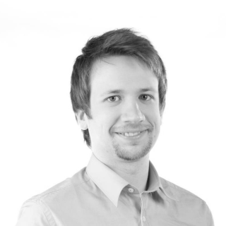
David Sundelius
Technical agility - What, why and how?
Is it just a buzzword that forces you to stand up during your morning meetings? No! Agility for the developer, the organization and the business are all parts of getting a workplace that is motivating and continually learning. During this time the technical part of agile will be presented, and how it can affect the organization, product and people. Some hands-on ideas on how to increase your organizations technical agility are also promised.
David has experience with rendering techniques for lighting, programming language development and front end architecture for web applications, but is now working as a technical agile coach. He’s main focus is to help team to continuously improve their work situation through technology, ways of working and self organization.
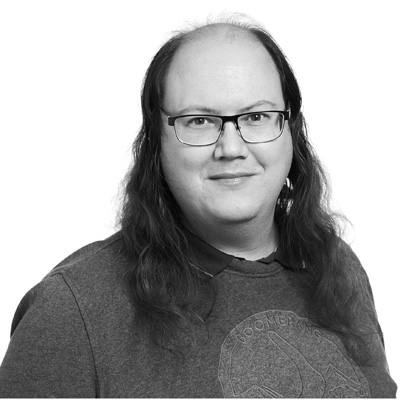
Niclas Zeising
FreeBSD is not Linux
FreeBSD is an advanced open source Unix-like operating system with roots in the Berkeley Software Distribution (BSD) Unix originally distributed by the University of California, Berkeley. It is one of the oldest and largest open source projects in the world, having recently celebrated it's 25th birthday. FreeBSD is used to power modern servers, desktops and embedded system and its advanced networking, storage and security features makes it the platform of choice for many of the busiest web sites and most pervasive networking and storage devices. When sending a network packet across the Internet, there is a good chance it will touch a FreeBSD system along the way.
This presentation will give an overview of the FreeBSD operating system and the FreeBSD project community. We will walk through what FreeBSD is, and the community behind it. I will also talk about the various features in FreeBSD, such as jails, ZFS, networking and virtualization and some of the places where FreeBSD can be found.
Niclas is an IT consultant based in Stockholm, Sweden, specializing in systems administration, IT operations, and IT security. He has been involved in the FreeBSD project for over a decade and has been a FreeBSD committer since 2012. Most notably, he's involved in the FreeBSD port of the xorg graphical environment and related software, working to improve the FreeBSD desktop experience as part of the Graphics Team. Niclas is also one of the organizers of the BSD Users Stockholm Meetup.